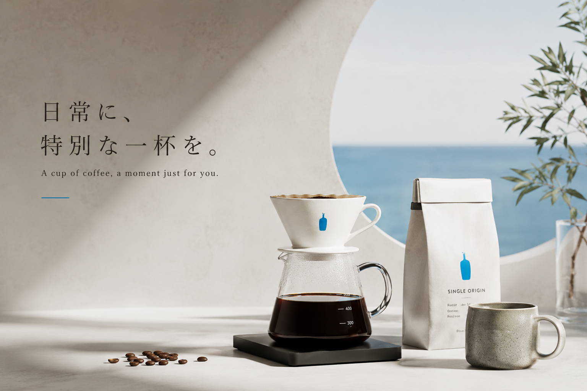
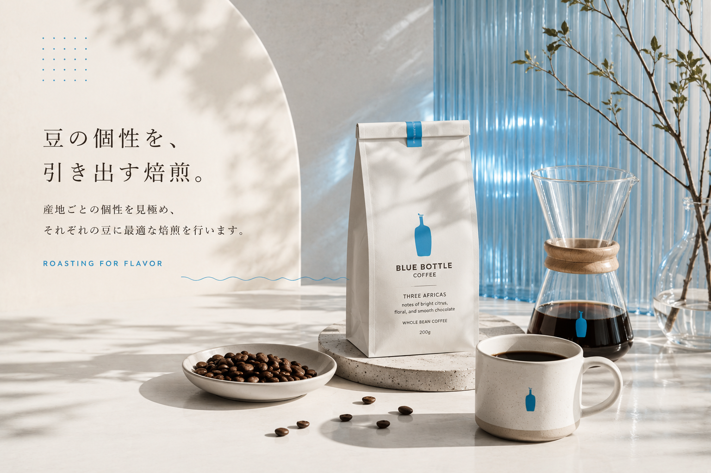
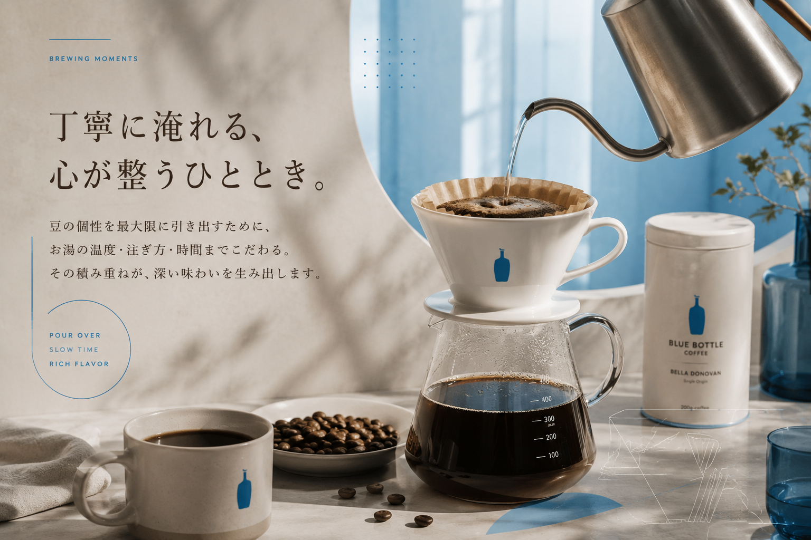
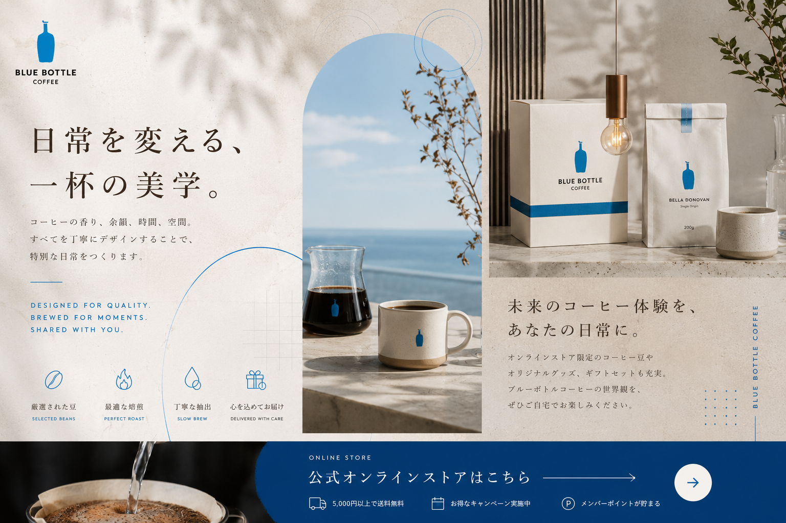

Blue Bottle Coffeeは、 世界中から厳選したコーヒー豆と、 丁寧な焙煎・抽出によって、 静かで豊かなコーヒー体験を届ける スペシャルティコーヒーブランドです。
▶ 公式オンラインストアを見る香り、 湯気、 光、 余韻。 Blue Bottle Coffeeは、 一杯のコーヒーを通して、 空間そのものをデザインするような ライフスタイルブランドとして支持されています。

世界中から選び抜かれたコーヒー豆を、 豆ごとに異なる焙煎設計で仕上げる。 Blue Bottle Coffeeは、 一杯ごとの個性を大切にしています。
季節ごとに最適な豆を買い付け。
豆ごとの個性を引き出す焙煎設計。
ピークフレーバー期間を重視。
Blue Bottle Coffeeでは、 焙煎後の鮮度にもこだわり、 コーヒー豆が最も美味しく感じられる タイミングを重視しています。

産地や品種ごとに異なる個性を、 最適な焙煎によって引き出しています。
Blue Bottle Coffeeでは、 豆ごとの個性を最大限に活かすため、 焙煎設計や抽出バランスにもこだわっています。

お湯を注ぎ、 ゆっくりと抽出する。 その時間そのものが、 コーヒー体験になります。
一杯ずつ風味を引き出す抽出スタイル。
広がるアロマや余韻も魅力。
自宅でも本格的な体験を楽しめる。

Blue Bottle Coffeeは、 コーヒーだけではなく、 その時間や空間までデザインする ライフスタイルブランドです。
スペシャルティコーヒー、 ハンドドリップ、 ロースタリー、 ギフト。 Blue Bottle Coffeeは、 一杯のコーヒーを丁寧に楽しみたい人へ向けた、 新しいコーヒー体験を提案しています。
▶ 公式サイトを見るBlue Bottle Coffeeは、 世界中から厳選したコーヒー豆を使用し、 焙煎・鮮度・抽出方法にまでこだわる スペシャルティコーヒーブランドです。
Blue Bottle Coffeeでは、 コーヒー豆だけではなく、 グッズやマグカップ、 ギフトセットなども人気。